Para criar um parágrafo, basta escrever um texto contínuo, sem pular linhas.
Você também pode criar
listas;
ordenadas,
assim como
listas;
não-ordenadas
e imagens. Lembre que todas as imagens devem estar em uma subpasta img.
Para tabelas, usa-se a notação do
MultiMarkdown,
que é muito flexível. Vale a pena abrir esse link para saber todas as
possibilidades.
coluna a
coluna b
1
2
Ao longo de um texto, você pode usar itálico, negrito, vermelho e
tecla. Também pode usar uma equação LaTeX: \(f(n) \leq g(n)\). Se for muito
grande, você pode isolá-la em um parágrafo.
Você também pode inserir código, inclusive especificando a linguagem.
Simulando o codigo
Abaixo está o código de Floyd Washall , o qual contém 3 loops, que ajudarão a percorrer a matriz e encontrar os menores camninhos entre os vértices.
def floyd_warshall(graph):
num_vertices = graph.shape[0]
dist = graph.copy()
iteracao = 0
for k in range(num_vertices):
for i in range(num_vertices):
for j in range(num_vertices):
if dist[i][j] > dist[i][k] + dist[k][j]:
dist[i][j] = dist[i][k] + dist[k][j]
plot_and_save_matrix(dist, iteracao, i, j)
iteracao += 1
return dist
A primeira linha do código armazena em uma variável local a quantidade total de vértices no grafo, o que é crucial para definir o número de iterações que cada loop deve executar.
O loop mais externo tem o objetivo de criar um vértice auxiliar, permitindo testar outros caminhos além dos diretos, os quais as veze podem ter pesos infinito, ou seja, não existirem. Ao longo do código vão sendo criados n vértices auxiliares, que permitem que testar todas as possibilidades e ter certeza qual deles é o menor caminho.
Os loops mais internos percorrem a matriz e verificam se usando o vértice auxiliar resulta em um caminho mais curto. Essa verificação é feita através da condicional presente no loop mais interno.
Acompanhe pela animação, o que acontece com a matriz depois de cada interação do algoritimo
Aviso
Para o exercício abaixo é recomendado fazer passo a passo ao invés de tentar achar a resposta direto.
Exercício
Tente simular o que acontecerá com está matriz depois de cada interação do código.
Gabarito
As alterações nessa matriz ocorreram nos vértices que não estavam conectado como, por exemplo, o caminho entre o vértice 1 e o 3, que antes estava com um custo muito elevado, mas agora tem um custo três uma vez que foi usado vértice 2 como auxiliar.
void f() {
printf("hello world\n");
}
Se não especificar nenhuma, o código fica com colorização de terminal.
 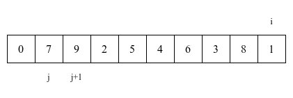
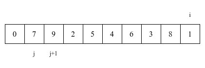
 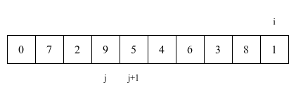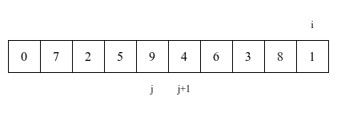
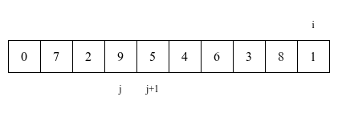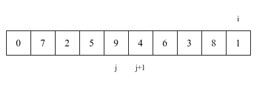
 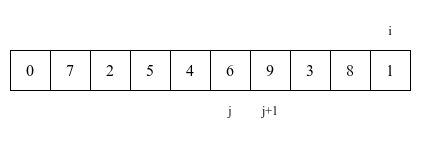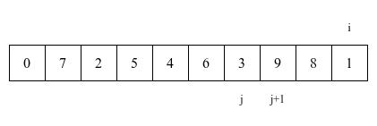
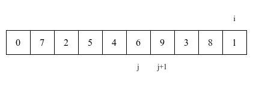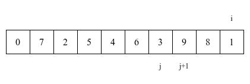
 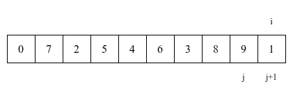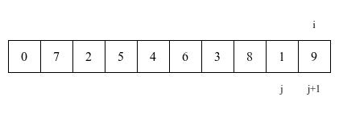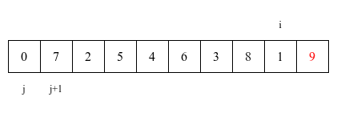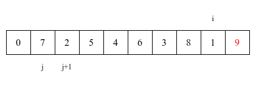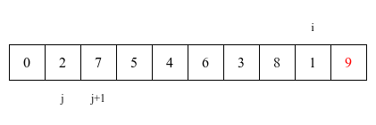
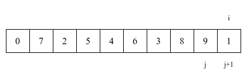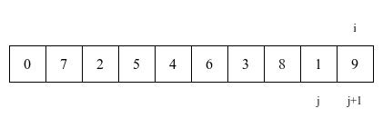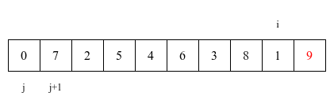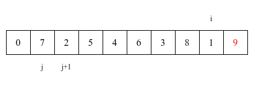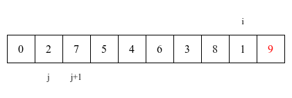 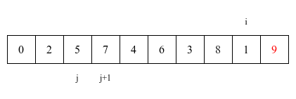
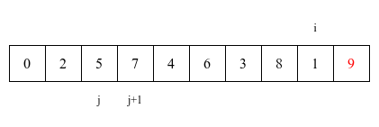


 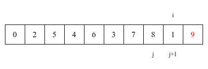
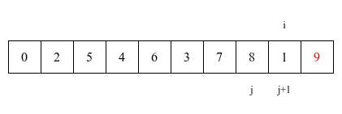 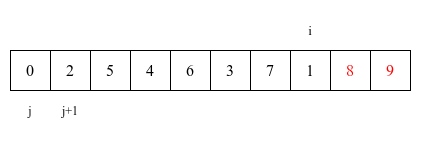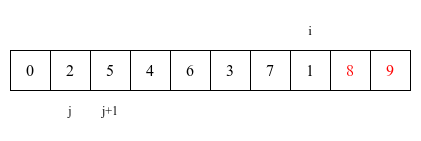
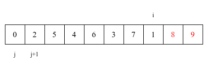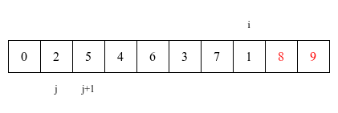 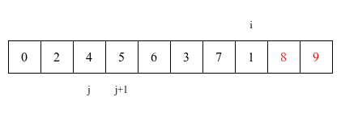
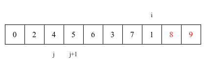


 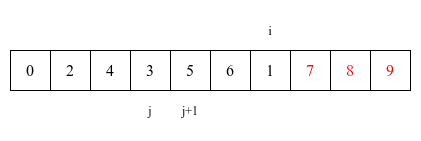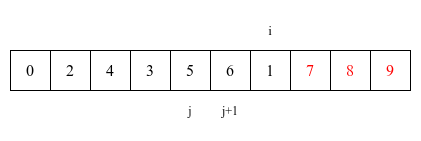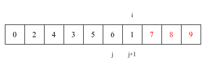
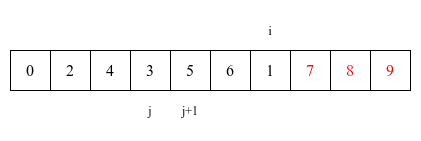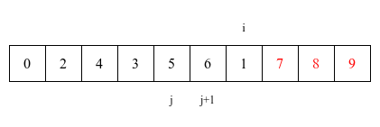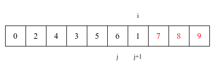
 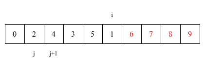
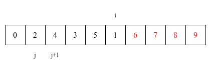 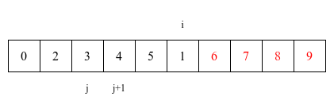
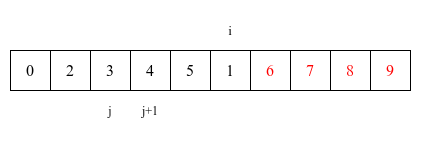 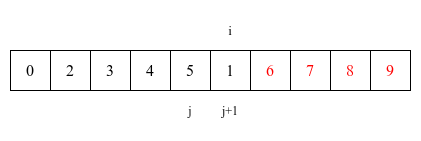
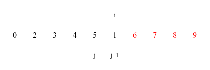 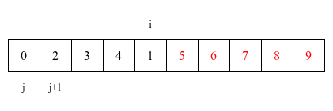
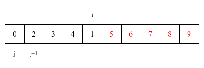 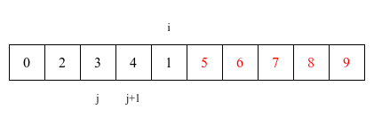
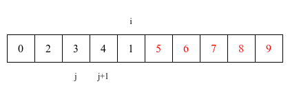 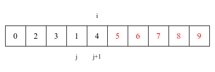
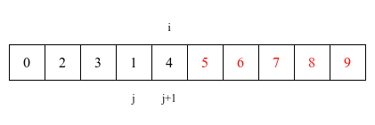

 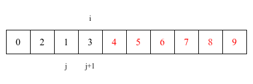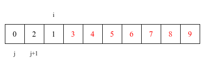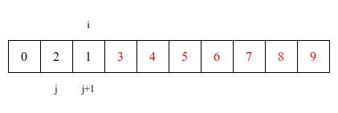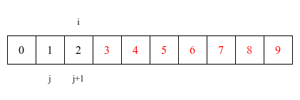
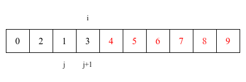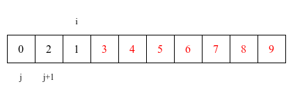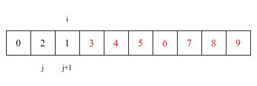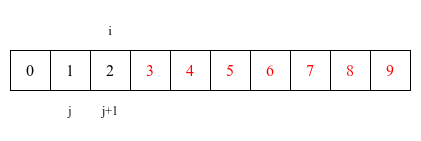